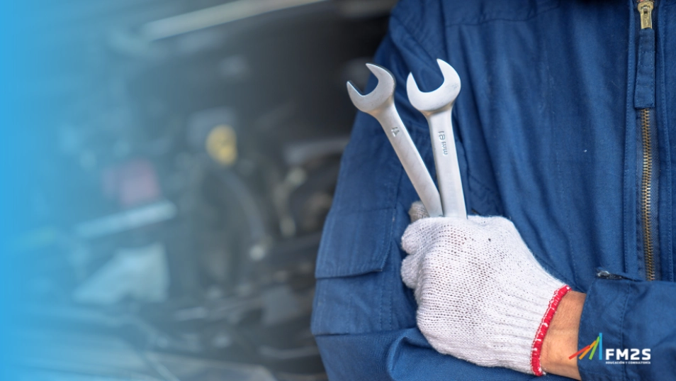

Explore o universo da Informática e suas aplicações na engenharia.
A Manunteção Industrial é o conjunto de práticas e técnicas aplicadas para garantir o bom funcionamento, segurança e prolongamento da vida útil de máquinas e equipamentos em indústrias. Ela inclui inspeções, reparos melhorias para evitar falhas e interrupções na produção.
O curso de manutenção industrial é ideal para quem se interessa por máquinas, sistemas e o funcionamento das indústrias. Esse campo envolve o conhecimento e as habilidades necessárias para manter o maquinário e os sistemas de uma fábrica ou unidade industrial em pleno funcionamento, prevenindo falhas, garantindo a eficiência e aumentando a vida útil dos equipamentos.
Ao escolher esse curso, você entra em um setor essencial para a indústria moderna, onde a manutenção adequada de equipamentos é vital para o sucesso das operações. Durante o curso, você aprenderá sobre técnicas de manutenção preventiva, corretiva e preditiva, além de conceitos de mecânica, eletrônica, hidráulica e pneumática, que são fundamentais para trabalhar com a diversidade de equipamentos encontrados nas indústrias.
Manutenção industrial é uma profissão valorizada, pois é diretamente responsável por evitar paralisações inesperadas e perdas de produtividade, que podem ser extremamente caras para as empresas. Além disso, os conhecimentos adquiridos permitem que você trabalhe em diversas áreas, como indústria de alimentos, farmacêutica, automobilística e até em grandes centros de logística e distribuição.
Esse aprendizado também pode ser útil fora do ambiente de trabalho, já que você terá as habilidades para identificar e resolver problemas técnicos de maneira prática e eficaz. Saber como diagnosticar e consertar equipamentos é uma vantagem que pode te ajudar tanto em situações profissionais quanto pessoais.
Mesmo que você não tenha experiência prévia, o curso de manutenção industrial oferece o suporte necessário para desenvolver essas competências com segurança e confiança. No final, você estará preparado para atuar em uma área que exige precisão, responsabilidade e atenção aos detalhes, pronto para fazer a diferença em um setor que é a base do funcionamento de diversas indústrias.
Para informções sobre o processo da matrícula, clica aqui:
Matrícula